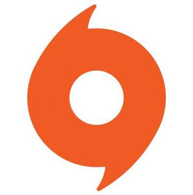
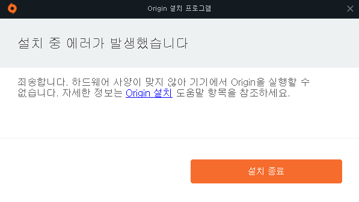

일렉트로닉 아츠에서 개발한 디지털 배급, 디지털 권리 관리(영어: DRM), 소셜 네트워크 서비스제공 플랫폼이다. 사용자들이 PC나 모바일 플랫폼을 이용해 게임을 구매할 수 있도록 하며,
오리진 클라이언트(영어: Origin Client)를 통해 게임을 다운로드 할 수 있게 한다. 2013년 2월 8일부터는 맥 OS사용자들도 오리진을 이용할 수 있게 되었다.
오리진은 프로필 관리, 인-게임 오버레이에서의 친구와의 채팅 및 게임 참가, 트위치TV를 통한 스트리밍 서비스, 라이브러리 공유, 페이스북, 엑스박스 라이브, 플레이스테이션 네트워크,
그리고 닌텐도 네트워크와 같은 네트워킹 서비스를 통합한 커뮤니티를 형성한 것을 특징으로 가진다.
또한 일렉트로닉 아츠는 오리진의 경쟁자 격인 밸브 코퍼레이션의 스팀과 경쟁 하기위해 2012년 3월 말부터 크로스플랫폼 지원,
도전과제와 보상 시스템 추가, 클라우드 게임 저장 지원을 시작하였다. 오리진은 500만명이 넘은 유저들이 가입해있다.(2013년 기준)
2005년 말, EA 다운로더(영어: EA Downloader)로 시작하여 2006년 11월에 EA 링크(영어: EA Link)로 서비스 이름을 변경하고 게임의 트레일러, 데모, 특별 컨텐츠와 컨텐츠 배달 서비스를 지원하였다. 2007년 11월에는 EA 스토어(영어: EA Store)와 EA 다운로드 매니저(영어: EA Download manager)를 결합하여 서비스하였다. 2011년 6월 3일에 EA 스토어와 EA 다운로드 매니저를 통합하여 오리진으로 이름을 변경하고 ESD사업을 진행하게 되었다.

오리진 클라이언트는 유저들이 일렉트로닉 아츠에서 제공하는 게임, 확장팩, 패치 등을 다운받을 수 있게하는 셀프-업데이팅 소프트웨어다.오리진 클라이언트의 디자인은 경쟁자인 스팀과 비슷하게 디자인 되어있다. 스팀과 다르게 게임 중 인-게임 오버레이를 비활성화할 수 있다. 클라이언트와 다운로드 속도는 처음엔 안정적이지 않았지만 몇 번의 업데이트에 걸쳐 이전보다 향상되었다.